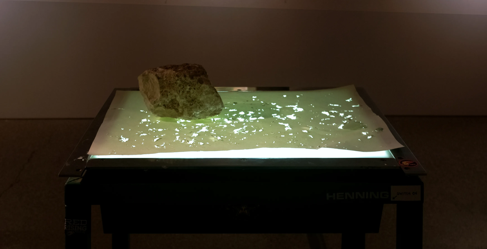
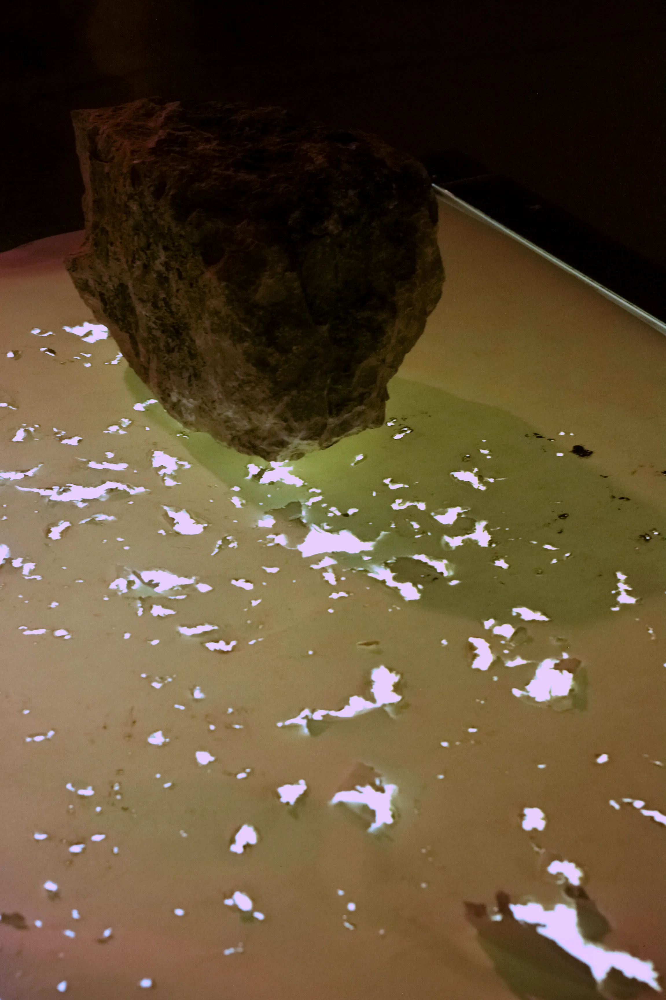
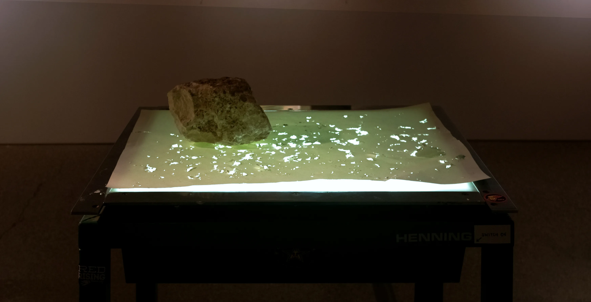
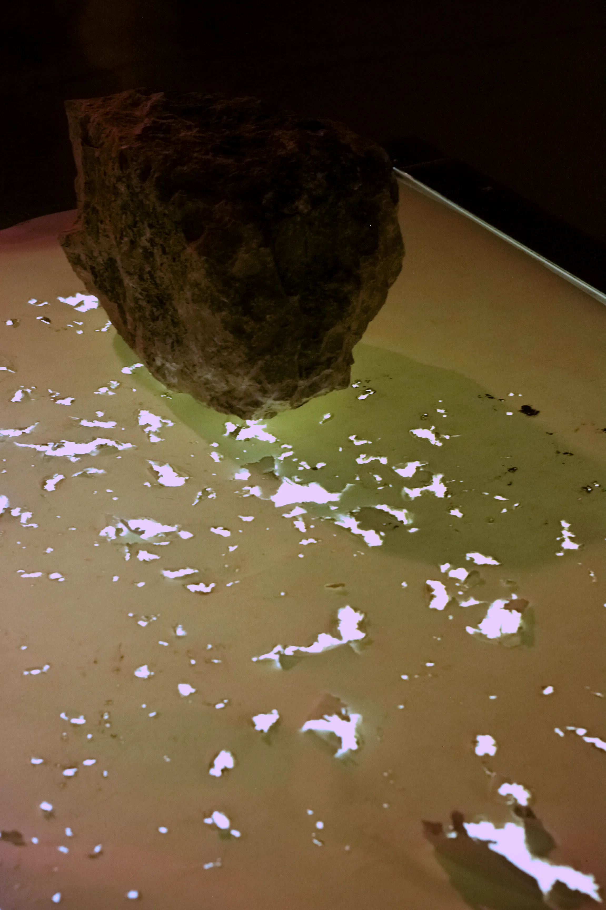

This Isn't Enough,
I Need to Touch the Grass
North American creative, Owen Dunnigan, established themselves in the prairies discovering transdisciplinary methods to construct and deconstruct projects during university. Usually developing around institutional critique or responding to current events, compositions balance the scale of organic and geometric/manufactured forms with colour. Most works revolve expressions of education, loss, nature, and ephemerality usually set in photo, text, print, books and paper, or found materials. Working from large scale projects to simpler constructions, they seek to raise different questions depending on personal backgrounds and instill a sense of curiosity to research, ideas, or the materials used.